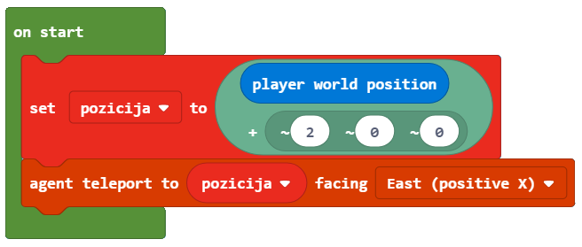

Projektni zadatak - Stup¶
Slično kao u prirodi (promjena godišnjih doba, cirkulacija vode, dan i noć, porast i pad razine mora itd.), u programiranju možemo ponavljati određene korake više puta. Kao i u prirodi, i kod programiranja je potrebno pokrenuti dijelove programa nekoliko puta kako biste dovršili određene zadatke. Za ove vrste programa kažemo da sadrže ponavljanja, a ta se ponavljanja nazivaju petlje.
Ponavljanje ćemo demonstrirati stvaranjem stupa u obliku kvadrata, čija je baza kvadrat s stranicama od 5 blokova duljine i 10 visina. U Minecraftu također možemo koristiti agent za obavljanje određenih radnji, kao što su sadnja i žetva, miniranje, sječa stabala i izgradnju objekata. Blokovi koji se odnose na agenta nalaze se u kategoriji :
{kind=link}
Faza 1.
Razmišljajući o zadatku: Pomicanjem naprijed pet blokova i skretanjem ulijevo i udesno (pod kutom od 90 stupnjeva) stvara se baza u obliku kvadrata. Pomicanje po z-osi omogućava izgradnju tornja visokog 10 blokova.
Faza 2
Otvorite Code Builder (pritiskom na tipku C); pojavit će se prozor za uređivanje u koji možete slagati blokove.
Ovaj zadatak ćemo podijeliti u tri dijela:
Agenta postavljamo na određeno mjesto u svijetu i dajemo mu alate za izgradnju željenog objekta,
stvaranje kvadratne osnove stupa,
stvarajući okomitu stranu stupa.
Da bismo postavili agenta gdje ga želimo, upotrijebit ćemo blok  . Unos riječi dođi postavljanje agenta na željeno mjesto. Koristimo blok
. Unos riječi dođi postavljanje agenta na željeno mjesto. Koristimo blok  iz kategorije da se agent postavi na željeno mjesto. Agenta ćemo smjestiti u položaj našeg lika (igrača) koji je pomaknuo dva bloka (koraka) ulijevo. Da bismo to postigli, upotrijebit ćemo varijablu pozicija, koja pohranjuje trenutnu vrijednost položaja lika (igrača).
iz kategorije da se agent postavi na željeno mjesto. Agenta ćemo smjestiti u položaj našeg lika (igrača) koji je pomaknuo dva bloka (koraka) ulijevo. Da bismo to postigli, upotrijebit ćemo varijablu pozicija, koja pohranjuje trenutnu vrijednost položaja lika (igrača).
Stvorit ćemo varijablu pozicija u kategoriji Varijable:

Na početku je vrijednost varijable pozicija trenutna pozicija lika u svijetu pomaknuta dva bloka lijevo.
Definirat ćemo početnu vrijednost s blokom  . To znači da svaki put kada se pokrene program, Minecraft postavlja vrijednost položaja na željeno mjesto (agent se pomakne dva bloka lijevo od lika (igrača)), i možemo započeti izgradnju kvadratne osnove stupa.
. To znači da svaki put kada se pokrene program, Minecraft postavlja vrijednost položaja na željeno mjesto (agent se pomakne dva bloka lijevo od lika (igrača)), i možemo započeti izgradnju kvadratne osnove stupa.
Iz kategorije Varijable povlačimo blok , ćemo umetnuti blok koji nam daje trenutnu poziciju igrača pomaknutu za dva bloka lijevo.
To se može postići na sljedeći način pomoću bloka:
iz kategorije  .
.
U gornji dio bloka povući ćemo blok , što daje trenutnu poziciju lika (igrača) iz kategorije  . U donji dio bloka, polje za unos x koordinate, stavit ćemo broj 2.
. U donji dio bloka, polje za unos x koordinate, stavit ćemo broj 2.
Izgled bloka on start:

Za postavljanje agenta na željeno mjesto koristit ćemo agent bloka iz kategorije . Stavit ćemo varijablu pozicija u prvi blok argumenata, a u drugi blok argumenata, s padajuće liste ćemo odabrati East (positive X).
Izgled bloka:
Faza 3.
Program testiramo klikom na gumb  :
:

Da bi agent mogao postaviti blokove, moramo osigurati da u svom inventaru ima sve što je potrebno za izgradnju stupova. Za to ćemo koristiti blok iz kategorije :
{kind=link}

Važno: Inventar koji se otvara pritiskom na tipku E, igrač koristi za upravljanje predmetima koje posjeduje (nosi). Sastoji se od utora 1 do 9 u koji može “pohraniti” predmete potrebne za stvaranje različitih objekata.
Sada moramo stvoriti podlogu stupa u obliku kvadrata. Da bi agent mogao stvoriti kvadratnu bazu, potreban nam je nekakav “okidač” za taj događaj. Za to ćemo koristiti chat i riječ kvadrat.
Za postavljanje bloka u kvadratni oblik, duljine 5 blokova, upotrijebit ćemo blok  iz kategorije
iz kategorije  .
.
Kvadrat je geometrijska figura sastavljena od četiri strane jednake duljine, s suprotnim stranama paralelnim i kutovima između susjednih strana 90 stupnjeva. Kvadrat ima četiri strane, pa ćemo u blok ponavljanja upisati broj 4:

Da bi agent mogao postavljati blokove kretanjem po svijetu, moramo upotrijebiti blok  iz kategorije .
iz kategorije .
Da bismo mogli izvesti radnju, moramo postaviti drugi blok argumenata na true:

Duljina stranice, koja iznosi 5 blokova, bit će definirana blokom iz kategorije :

Kutovi u kvadratu su 90 stupnjeva, to ćemo postići blokom  iz kategorije :
iz kategorije :

Program možemo testirati klikom na gumb .

Nakon dovršetka ispitivanja možemo vidjeti da agent nije konstruirao cijeli kvadrat.
Da bismo to postigli, moramo premjestiti agenta. To možemo učiniti uvođenjem bloka i odabir opcije up s padajuće liste. Pomičemo agent za jedan blok, zbog čega trebamo staviti 1 kao vrijednost trećeg parametra:

Sada ćemo ponovo testirati program, a ovaj put dobit ćemo kvadrat:

Na temelju gornjeg koda, možemo vidjeti da agent nije u položaju, što je jedan blok iznad početnog položaja. Za postavljanje agenta u željeni položaj uvest ćemo dva bloka i :
Tijekom testiranja programa, možemo vidjeti da agent napušta blok nakon dovršetka pokreta. Ne želimo da se to dogodi. Zbog toga uvodimo dva bloka, koji će agent bez bloka staviti u položaj za izgradnju zida:

Ono što nam preostaje je stvoriti program za izgradnju stupa koji će biti visok 10 blokova.
To možemo učiniti uvođenjem nove petlje u koju ćemo umetnuti već dovršenu petlju (koja stvara kvadrat). Uvest ćemo blok i postavite vrijednost brojača na 10:
Postavljanje jedne petlje unutar tijela druge petlje naziva se umetanje.

Konačni izgled koda koji će omogućiti izgradnju stupa visokog 10 blokova i osnove kvadrata 5x5:

Faza 3
Testiranje programa.
Kliknite gumb .

Na ovaj način smo stvorili stup koji je visok 10 blokova i širine 5x5.